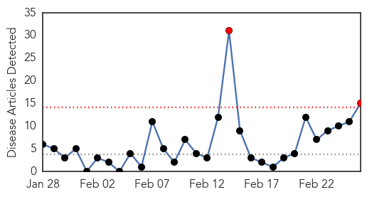
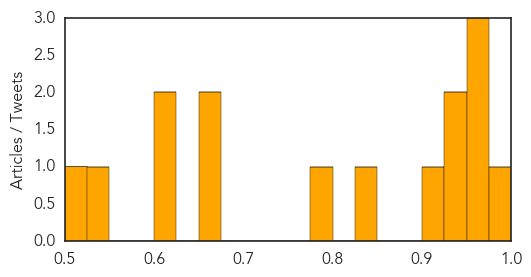
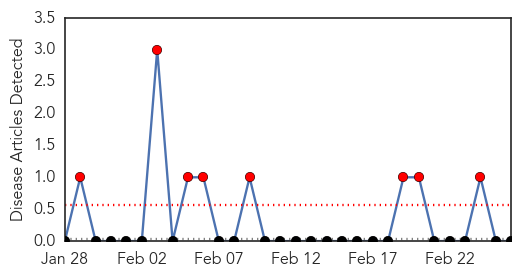

Measles
30-Day Web Trend
2 alerts, 0 warnings

30-Day Twitter Trend
0 alerts, 0 warnings

Article Locations
Article Confidences
Top Articles:
- 0.989
- Measles back again in US, experts call for vaccination
- 0.964
- Philippines: Davao City declares measles outbreak
- 0.954
- Massachusetts Trader Joe’s May Be Linked To Measles Case
- 0.953
- Officials confirm two cases of measles in Massachusetts
- 0.940
- Bay Area records 4th case of measles
- 0.940
- Bay Area records 4th case of measles
- 0.921
- Case Of Measles Confirmed In San Mateo County Patient « CBS San Francisco
- 0.831
- Hawaii health officials investigate second measles case
- 0.799
- At-risk students should stay home
- 0.669
- Measles warning expanded to Wellesley medical office
- 0.656
- Paracetamol use during pregnancy might put babies at risk of neurodevelopmental disorders
- 0.619
- Médecins Sans Frontières (MSF) International
- 0.607
- Mass. Measles Alert Expands to Wellesley
- 0.532
- Workers at Framingham restaurant and Bose Corp. exposed to measles
- 0.522
- State health officials confirm second measles case in Hawaii
Top Tweets:
-
No tweets found for Feb 26, 2014
Mold/Fungal
30-Day Web Trend
8 alerts, 0 warnings

30-Day Twitter Trend
0 alerts, 0 warnings

Article Locations

Article Confidences

Top Articles:
-
No articles found for Feb 26, 2014
Top Tweets:
-
No tweets found for Feb 26, 2014